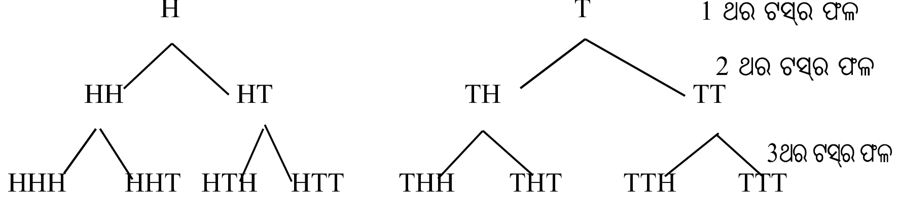

4.1ଉପକ୍ରମଣିକାIntroduction
ନବମ ଶ୍ରେଣୀରେ ତୁମେମାନେ “ସମ୍ଭାବ୍ୟତା” ସଂପର୍କରେ ଅବଗତ ହୋଇ ସାରିଛ । ଏକ ପରୀକ୍ଷଣ (Experiment) ଏବଂ ଏହାର ପର୍ଯ୍ୟବେକ୍ଷଣ (observation) ରୁ ଆସୁଥିବା ଫଳାଫଳକୁ ଆଧାର କରି “ସମ୍ଭାବ୍ୟତା”କୁ ସଂଖ୍ୟାରେ ମାପ କରାଯାଉଥିବାର ସୂଚନା ମଧ୍ୟ ପାଇ ସାରିଛ । ଏକ ଘଟଣାର ସମ୍ଭାବ୍ୟତା(Empirical Probability) ନିର୍ଣ୍ଣୟ ସାଧାରଣତଃ ଏକ ପ୍ରକୃତ ପରୀକ୍ଷଣରୁ ଉଦ୍ଭବ ଘଟଣାଟିର ବାରମ୍ବାରତା ଏବଂ ପରୀକ୍ଷଣ ସଂଖ୍ୟା ଉପରେ ନିର୍ଭର କରିଥାଏ; ଏହା ତୁମେମାନେ ଜାଣିଛ ଏବଂ ଏହାକୁ ଆଧାର କରି ଭିନ୍ନ ଭିନ୍ନ ଘଟଣାର ସମ୍ଭାବ୍ୟତା ମଧ୍ୟ ନିର୍ଣ୍ଣୟ କରିଛ । ଏତଦ୍ ବ୍ୟତୀତ ସେଟ୍ ତତ୍ତ୍ୱ ଉପରେ ଆଧାରିତ ସମ୍ଭାବ୍ୟତାର କିଛି ଧାରଣା ମଧ୍ୟ ହାସଲ କରିଛ ।
ଉକ୍ତ ଅଧ୍ୟାୟରେ ତତ୍ତ୍ୱାଧାରିକ ସମ୍ଭାବ୍ୟତା (Theoretical Probability) ଜାଣିବା ସହ କେତେକ ଘଟଣା ସହ ଜଡ଼ିତ ବିଭିନ୍ନ ପଦ ସଂପର୍କିତ ଧାରଣା ଏବଂ ‘ସେଟ୍ ତତ୍ତ୍ୱ’କୁ ଆଧାର କରି ଘଟଣା କିମ୍ବା ଘଟଣାବଳୀ ଗୁଡ଼ିକର ସମ୍ଭାବ୍ୟତା ନିର୍ଣ୍ଣୟ ସଂପର୍କରେ ଜାଣିବ ।
4.2ଆନୁଭବିକ ଏବଂ ତତ୍ତ୍ୱାଧାରିକ ସମ୍ଭାବ୍ୟତାEmpirical and Theoretical Probability
ସମ୍ଭାବ୍ୟତାର ଧାରଣା ସାଧାରଣତଃ ପରୀକ୍ଷଣ (Experiments) ଏବଂ ଏହାର ପର୍ଯ୍ୟବେକ୍ଷଣ (observations) ଉପରେ ଆଧାରିତ ହୁଏ । ଅର୍ଥାତ୍ ଘଟଣାର ସମ୍ଭାବ୍ୟତା ନିର୍ଣ୍ଣୟ ପରୀକ୍ଷା ସିଦ୍ଧ ହୋଇଥାଏ । ଏହାକୁ ପୂର୍ବଶ୍ରେଣୀରେ ଜାଣିଛ । ପରୀକ୍ଷଣରୁ ଉଦ୍ଭବ ଫଳାଫଳର ପ୍ରକୃତ ଉପସ୍ଥାପନା କରାଯାଇ ଘଟଣାଟିର ସମ୍ଭାବ୍ୟତା ନିରୂପଣ ସମ୍ଭବ । ଏହି ପ୍ରକାରର ସମ୍ଭାବ୍ୟତା ନିରୂପଣକୁ ଅନୁଭବ ସିଦ୍ଧ ବା ଆନୁଭବିକ (Empirical) ସମ୍ଭାବ୍ୟତା କୁହାଯାଏ । ନବମ ଶ୍ରେଣୀରେ ଦତ୍ତ ପରୀକ୍ଷଣ -1 କୁ ଅନୁଧ୍ୟାନ କଲେ ଜାଣିବା ଯେ, ମୁଦ୍ରାର ଟସ୍ ସଂଖ୍ୟାର କ୍ରମାଗତ ବୃଦ୍ଧି କରାଯାଇ ପ୍ରତ୍ୟେକ ଟସ୍ରେ ପଡୁଥିବା H କିମ୍ବା T ସଂଖ୍ୟାକୁ ଲିପିବଦ୍ଧ କରି P(H) କିମ୍ବା P(T) ନିର୍ଣ୍ଣୟ କରାଗଲେ ପ୍ରତ୍ୟେକ କ୍ଷେତ୍ରରେ ପାଉଥିବା ସଂଖ୍ୟା ଓ 0.5 ଅର୍ଥାତ୍ $\frac{1}{2}$ ମଧ୍ୟରେ ପାର୍ଥକ୍ୟ କ୍ରମେ କ୍ରମେ କମି ଆସୁଛି । ସେହିପରି ପରୀକ୍ଷଣ - 2 ରେ ଲୁଡୁଗୋଟି ଗଡ଼ାଇବାର ସଂଖ୍ୟାର ବୃଦ୍ଧି ଘଟିଲେ ପ୍ରତ୍ୟେକ ଫଳାଫଳ (1, 2, 3, 4, 5 ଓ 6)ର ସମ୍ଭାବ୍ୟତା 0.166 କିମ୍ବା $\frac{1}{6}$ ର ନିକଟବର୍ତ୍ତୀ ହେଉଛି । ଉଭୟ କ୍ଷେତ୍ରରେ ଫଳଗୁଡ଼ିକର ସମ୍ଭାବ୍ୟତା ଯଥାକ୍ରମେ $\frac{1}{2}$ ଓ $\frac{1}{6}$ ପାଇଲେ; ଯାହା ପରୀକ୍ଷା ସିଦ୍ଧ ବା ଅନୁଭବ ସିଦ୍ଧ ।
\therefore \text{‘ଘଟଣା’ର ଆନୁଭବିକ ସମ୍ଭାବ୍ୟତା} = \frac{\text{ଆବଶ୍ୟକ ଫଳଟିର ବାରମ୍ବାରତା}}{\text{ପରୀକ୍ଷଣ ସଂଖ୍ୟା}}
ଆନୁଭବିକ (Empirical) ସମ୍ଭାବ୍ୟତା ନିରୂପଣ ଆଧାରରେ ନିମ୍ନ କେତେକ ଉଦାହରଣକୁ ଦେଖ ।
ଉଦାହରଣ - 1 - ଗୋଟିଏ ମୁଦ୍ରାକୁ 20 ଥର ଟସ୍ କରିବାରୁ 7 ଥର T ଆସିଲେ P(T) ଓ P(H) ନିରୂପଣ କର ।
ସମାଧାନ :- ସମୁଦାୟ 20 ଥର ଟସ୍ରୁ 7 ଥର ‘T’ ଆସିଲେ, ‘H’ ଆସିବ 13 ଥର ।
P(T) = \frac{\text{T ର ବାରମ୍ବାରତା}}{\text{ଟସ୍ ସଂଖ୍ୟା}} = \frac{7}{20} \quad \text{ଏବଂ} \quad P(H) = \frac{\text{H ର ବାରମ୍ବାରତା}}{\text{ଟସ୍ ସଂଖ୍ୟା}} = \frac{13}{20}
ଉଦାହରଣ - 2 : ଗୋଟିଏ ଲୁଡୁ ଗୋଟିକୁ 30 ଥର ଗଡ଼ାଇଲେ ସଂଖ୍ୟା 1 ଓ 2 ପ୍ରତ୍ୟେକେ 4 ଥର, ସଂଖ୍ୟା 3, 4 ଓ 5 ପ୍ରତ୍ୟେକ 5 ଥର ପଡ଼ିଲେ P (6) ନିର୍ଣ୍ଣୟ କର ।
ସମାଧାନ - ଏଠାରେ 1 ର ବାରମ୍ବାରତା = 4, 2 ର ବାରମ୍ବାରତା = 4, 3 ର ବାରମ୍ବାରତା = 5, 4 ର ବାରମ୍ବାରତା = 5 ଓ 5 ର ବାରମ୍ବାରତା = 5
\therefore \text{6 ର ବାରମ୍ବାରତା} = 30 - (4 + 4 + 5 + 5 + 5) = 7
P(6) = \frac{\text{6 ର ବାରମ୍ବାରତା}}{\text{ସମୁଦାୟ ଗୋଟି ଗଡ଼ିବା ସଂଖ୍ୟା}} = \frac{7}{30}
ଉଦାହରଣ - 3 : ଏକ ଫୁଟବଲ୍ ଖେଳରେ 15 ଟି ଗୋଲ୍ ହୋଇଥିଲା । ଯଦି ଗୋଟିଏ ପକ୍ଷ 5 ଟି ଗୋଲ୍ ଦେଇଥାନ୍ତି, ତେବେ ଅନ୍ୟ ପକ୍ଷ ଗୋଲ୍ ଦେବାର ସମ୍ଭାବ୍ୟତା ନିରୂପଣ କର ।
ସମାଧାନ :- ଅନ୍ୟପକ୍ଷର ଗୋଲ୍ ଦେବାର ଘଟଣାକୁ E ନିଆଯାଉ ।
E ର ବାରମ୍ବାରତା = 15 - 5 = 10
P(E) = \frac{\text{E ର ବାରମ୍ବାରତା}}{\text{ସମୁଦାୟ ଗୋଲ୍ ସଂଖ୍ୟା}} = \frac{10}{15} = \frac{2}{3}
ଉଦାହରଣ - 4 : ଏକ ଫାଟକକୁ ଗୋଟିଏ ଦିନରେ ଅତିକ୍ରମ କରୁଥିବା ବିଭିନ୍ନ ପ୍ରକାରର ଯାନବାହନମାନଙ୍କର ସମ୍ଭାବ୍ୟତା ନିମ୍ନ ପ୍ରକାରର ଅଟେ ।
P (କାର୍) = $\frac{1}{4}$, P (ଟ୍ରକ୍) = $\frac{1}{8}$, P (ଦୁଇ ଚକିଆ ଗାଡ଼ି) = $\frac{1}{2}$ ଓ P (ଟ୍ରାକଟର) = $\frac{1}{8}$
ଯଦି ପ୍ରତି ଦିନ ହାରାହାରି 4000 ଖଣ୍ଡ ଯାନ ଫାଟକ ଅତିକ୍ରମ କରୁଥାଏ ତେବେ ଯାନବାହନଗୁଡ଼ିକର ମୋଟାମୋଟି ସଂଖ୍ୟା ନିରୂପଣ କର ।
ସମାଧାନ : ମନେକର କାର୍, ଟ୍ରକ୍, ଦୁଇଚକିଆ ଗାଡ଼ି ଓ ଟ୍ରାକଟର୍ମାନଙ୍କ ସଂଖ୍ୟା ଯଥାକ୍ରମେ x, y, z ଓ w ।
ଅତଏବ $n = x + y + z + w = 4000$ (n = ମୋଟ ଯାନବାହନ ସଂଖ୍ୟା) ।
\text{ପ୍ରଶ୍ନାନୁଯାୟୀ} \quad \frac{x}{n} = \frac{1}{4}, \frac{y}{n} = \frac{1}{8}, \frac{z}{n} = \frac{1}{2} \text{ ଓ } \frac{w}{n} = \frac{1}{8}
\text{କିମ୍ବା} \quad \frac{x}{4000} = \frac{1}{4}, \frac{y}{4000} = \frac{1}{8}, \frac{z}{4000} = \frac{1}{2} \text{ ଓ } \frac{w}{4000} = \frac{1}{8}
x = \frac{4000}{4} = 1000, \ y = \frac{4000}{8} = 500, \ z = \frac{4000}{2} = 2000 \text{ ଓ } w = \frac{4000}{8} = 500
$\therefore$ ପ୍ରତ୍ୟେକ ଦିନ ହାରାହାରି 1000 କାର୍, 500 ଟ୍ରକ୍, 2000 ଦୁଇଚକିଆ ଗାଡ଼ି ଓ 500 ଟ୍ରାକ୍ଟର ଫାଟକ ଅତିକ୍ରମ କରନ୍ତି ।
ଉପରିସ୍ଥ ପ୍ରତ୍ୟେକ ପରୀକ୍ଷଣକୁ ଲକ୍ଷ୍ୟ କରି ଏଠାରେ ଆମେ କହି ପାରିବା କି, ଏକ ଲକ୍ଷ ବା ଦଶ ଲକ୍ଷ ଥର ମୁଦ୍ରା ଟସ୍ କରି ଆସୁଥିବା ‘H’ ର ସମ୍ଭାବ୍ୟତା କେତେ ?
ପୂର୍ବ ଅନୁଭୂତିରୁ କହିପାରିବା ଯେ, ଏ କ୍ଷେତ୍ରରେ ‘H’ ର ସମ୍ଭାବ୍ୟତା 0.5 ବା $\frac{1}{2}$ । ସେହିପରି ଲୁଡୁଗୋଟି ଗଡ଼ାଇଲେ ପ୍ରତ୍ୟେକ ଫଳାଫଳର ସମ୍ଭାବ୍ୟତା $\frac{1}{6}$ ହେବ । ଏହାକୁ ତତ୍ତ୍ୱାଧାରିକ (Theoretical) ସମ୍ଭାବ୍ୟତା କୁହାଯାଏ; ଯାହା ପୂର୍ବରୁ ପରୀକ୍ଷଣ ସିଦ୍ଧ । ଉକ୍ତ ତତ୍ତ୍ୱ ଆଧାରିତ ଧାରଣା ସିଧାସଳଖ ଭାବରେ ଯେକୌଣସି ଘଟଣାର ସମ୍ଭାବ୍ୟତା ନିର୍ଣ୍ଣୟରେ ସାହାଯ୍ୟ କରିଥାଏ ।
ଉଦାହରଣ - 5 : ଯଦି “ଗୋଟିଏ ଲୁଡୁଗୋଟି ଗଡ଼ାଇଲେ 4 ରୁ କମ୍ ପଡ଼ିବା” ଏକ ଘଟଣା ହୁଏ, ତେବେ ଉକ୍ତ ଘଟଣାର ସମ୍ଭାବ୍ୟତା ସ୍ଥିର କର ।
ସମାଧାନ : ଘଟଣା ଦ୍ୱାରା ଅନୁଗୃହିତ (favourable) ଅଥବା ଘଟଣାର ଅନୁକୂଳ ଫଳାଫଳଗୁଡ଼ିକ 1, 2 ଓ 3
$\therefore$ ଘଟଣା ଦ୍ୱାରା ଅନୁଗୃହିତ ଫଳାଫଳ ସଂଖ୍ୟା = 3
ଲୁଡୁଗୋଟି ଗଡ଼ାଇଲେ ସମ୍ଭାବ୍ୟ ସମସ୍ତ ଫଳାଫଳ ସଂଖ୍ୟା = 6
\text{ଘଟଣାର ସମ୍ଭାବ୍ୟତା} = \frac{\text{ଘଟଣା ଦ୍ୱାରା ଅନୁଗୃହିତ ଫଳାଫଳ ସଂଖ୍ୟା}}{\text{ପରୀକ୍ଷଣର ସମ୍ଭାବ୍ୟ ସମସ୍ତ ଫଳାଫଳ ସଂଖ୍ୟା}} = \frac{3}{6} = \frac{1}{2}
ଉକ୍ତ ସମ୍ଭାବ୍ୟତାକୁ ତତ୍ତ୍ୱାଧାରିକ ସମ୍ଭାବ୍ୟତା (Theoretical or Classical probability) କୁହାଯାଏ ।
ଉଦାହରଣ - 6 : ଗୋଟିଏ ବ୍ୟାଗ୍ରେ ଗୋଟିଏ ଲେଖାଏଁ ସମଆକୃତି ବିଶିଷ୍ଟ ଲାଲ୍, ନୀଳ ଏବଂ ହଳଦିଆ ଗୋଟି ଥିଲା । ଅନିନ୍ଦିତା ବ୍ୟାଗ୍ ଭିତରକୁ ନ ଚାହିଁ ଗୋଟିଏ ଗୋଟି କାଢ଼ିଲା । ଗୋଟିଏ ଲାଲ୍, ଗୋଟିଏ ନୀଳ ବା ଗୋଟିଏ ହଳଦିଆ ଗୋଟି ବାହାରିବାର ସମ୍ଭାବ୍ୟତା ନିରୂପଣ କର ।
ସମାଧାନ : ମନେକର Y ହେଉଛି ଏକ ଘଟଣା “ବ୍ୟାଗ୍ରୁ ବାହାରିଥିବା ହଳଦିଆ ଗୋଟି” । ସେହିପରି B ଏବଂ R ଯଥାକ୍ରମେ ନୀଳ ଏବଂ ଲାଲ୍ ଗୋଟି ବାହାରିବାର ଘଟଣା ।
ଏଠାରେ ସମ୍ଭାବ୍ୟ ସମସ୍ତ ଫଳାଫଳ ସଂଖ୍ୟା = 3 ଏବଂ Y ଘଟଣା ଦ୍ୱାରା ଅନୁଗୃହିତ ଫଳାଫଳ ସଂଖ୍ୟା = 1
$\therefore P(Y) = \frac{1}{3}$ । ସେହିପରି $P(B) = \frac{1}{3}$ ଏବଂ $P(R) = \frac{1}{3}$
ଉଦାହରଣ - 7 : ଗୋଟିଏ ଲୁଡୁଗୋଟିକୁ ଥରେ ଗଡ଼ାଇଲେ (i) ‘4’ ରୁ ଅଧିକ ଲେଖାଥିବା ସଂଖ୍ୟା ଏବଂ (ii) 4 କିମ୍ବା 4 ରୁ କମ୍ ଲେଖାଥିବା ସଂଖ୍ୟା ଆସିବାର ସମ୍ଭାବ୍ୟତା ନିରୂପଣ କର ।
ସମାଧାନ : (i) ଘଟଣା ‘E’ = 4 ରୁ ଅଧିକ ଲେଖା ଥିବା ସଂଖ୍ୟା । ଏଠାରେ ସମ୍ଭାବ୍ୟ ସମସ୍ତ ଫଳାଫଳଗୁଡ଼ିକ ହେଲେ, 1, 2, 3, 4, 5 ଓ 6 ଏବଂ ଏଗୁଡ଼ିକର ସଂଖ୍ୟା 6 । ଘଟଣା E ଦ୍ୱାରା ଅନୁଗୃହିତ ଫଳାଫଳଗୁଡ଼ିକ ହେଲେ 5 ଏବଂ 6 ଏବଂ ଏଗୁଡ଼ିକର ସଂଖ୍ୟା 2 ।
\therefore P(E) = \frac{2}{6} = \frac{1}{3}
(ii) ଘଟଣା ‘F’ = “4 କିମ୍ବା 4 ରୁ କମ୍ ଲେଖା ଥିବା ସଂଖ୍ୟା” । ସମ୍ଭାବ୍ୟ ସମସ୍ତ ଫଳାଫଳଗୁଡ଼ିକ ହେଲେ, 1, 2, 3, 4, 5 ଓ 6 ଏବଂ ଏଗୁଡ଼ିକର ସଂଖ୍ୟା 6 । ଘଟଣା F ଦ୍ୱାରା ଅନୁଗୃହିତ ଫଳାଫଳଗୁଡ଼ିକ ହେଲେ 1, 2, 3 ଏବଂ 4 ଏବଂ ଏଗୁଡ଼ିକର ସଂଖ୍ୟା 4 ।
\therefore P(F) = \frac{4}{6} = \frac{2}{3}
ଏଠାରେ ଲକ୍ଷ୍ୟ କର $P(E) + P(F) = 1$ .......... (i)
ଉଦାହରଣ - 8 : ଦୁଇଟି ମୁଦ୍ରାକୁ ଏକ ସଙ୍ଗେ ଟସ୍ କଲେ, ଟସ୍ରେ ଅତିକମ୍ରେ ଗୋଟିଏ (H) ଆସିବାର ସମ୍ଭାବ୍ୟତା ସ୍ଥିର କର ।
ସମାଧାନ : ଦୁଇଟି ମୁଦ୍ରାକୁ ଏକ ସଙ୍ଗେ ଟସ୍ କରିଲେ ସମ୍ଭାବ୍ୟ ସମସ୍ତ ଫଳାଫଳଗୁଡ଼ିକ HH, HT, TH ଓ TT ଏବଂ ଏଗୁଡ଼ିକର ସଂଖ୍ୟା 4 ।
ଘଟଣା E ଅତିକମ୍ରେ ଗୋଟିଏ H ଆସିବା ଏକ ଘଟଣା ଦ୍ୱାରା ଅନୁଗୃହିତ ଫଳାଫଳଗୁଡ଼ିକ ହେଲେ, HH, HT, TH ଏବଂ ଏଗୁଡ଼ିକର ସଂଖ୍ୟା = 3
\therefore P(E) = \frac{3}{4}
$\therefore$ ଦୁଇଟି ମୁଦ୍ରାର ଟସ୍ରେ ଅତି କମ୍ରେ ଗୋଟିଏ H ଆସିବାର ସମ୍ଭାବ୍ୟତା $= \frac{3}{4}$
ବିକଳ୍ପ ସମାଧାନ : ଆମେ ଜାଣିଛୁ $P(E) = 1 - P(\bar{E}) = 1 - \frac{1}{4} = \frac{3}{4}$
( ଯେଉଁଠାରେ $P(\bar{E})$ = ଘଟଣା “ଦୁଇଟି ମୁଦ୍ରାର ଟସ୍ରେ କୌଣସିଟି H ନୁହେଁ” ର ସମ୍ଭାବ୍ୟତା $= \frac{1}{4}$)
ଏଠାରେ ଲକ୍ଷ୍ୟ କର “ଦୁଇଟି ମୁଦ୍ରାର ଟସ୍ରେ ଅତି କମ୍ରେ ଗୋଟିଏ H ଆସିବା” ଏବଂ “ଦୁଇଟି ମୁଦ୍ରାର ଟସ୍ରେ କୌଣସିଟି H ନୁହେଁ” ଘଟଣାଦ୍ୱୟ ପରସ୍ପର ପରିପୂରକ ।
ଅନୁଶୀଳନୀ - 4 (a)
4 questions · pages 74–74
4.3ସେଟ୍ ତତ୍ତ୍ୱ ଉପରେ ଆଧାରିତ କେତେକ ଧାରଣା
ସେଟ୍ ତତ୍ତ୍ୱର ସହାୟତାରେ ସମ୍ଭାବ୍ୟତାର ଧାରଣା ପାଇବା ଅପେକ୍ଷାକୃତ ଏକ ଉତ୍କୃଷ୍ଟ ପନ୍ଥା । ଏଥିପାଇଁ ସେଟ୍ ତତ୍ତ୍ୱ ସମ୍ବନ୍ଧୀୟ କେତେକ ଧାରଣା ଆବଶ୍ୟକ । ପ୍ରଥମେ ମୁଦ୍ରା ଟସ୍ର ଉଦାହରଣ ନେବା । ଗୋଟିଏ ମୁଦ୍ରା (ନିରପେକ୍ଷ ମୁଦ୍ରା)କୁ ଟସ୍ କଲେ ଫଳ H କିମ୍ବା T ମିଳିବ । ଏହା ଫଳ ଦ୍ୱୟ କୁ ଉପାଦାନ ରୂପେ ନେଇ ଗଠିତ ସେଟ୍ S ହେଲେ
S = \{H, T\} \quad \ldots\ldots (i)
ଉକ୍ତ ସେଟ୍କୁ ମୁଦ୍ରା ଟସ୍ ପରୀକ୍ଷଣର ସାମ୍ପଲ୍ ସ୍ପେସ୍ (Sample space) କୁହାଯାଏ । ଠିକ୍ ସେହିପରି ଗୋଟିଏ ଲୁଡୁ ଗୋଟିକୁ ଗଡ଼ାଇଲେ ଫଳ 1, 2, 3, 4, 5, ଓ 6 ମଧ୍ୟରୁ କୌଣସିଟି ବି ମିଳିବ ।
\text{ଏହି ପରୀକ୍ଷଣ ପାଇଁ ସାମ୍ପଲ୍ ସ୍ପେସ୍} \quad S = \{1, 2, 3, 4, 5, 6\} \quad \ldots (ii)
ଗୋଟିଏ ମୁଦ୍ରାକୁ ଦୁଇ ଥର ଟସ୍ କଲେ ଅଥବା ଦୁଇଟି ମୁଦ୍ରାକୁ ଏକ ସଙ୍ଗେ ଟସ୍ କରାଗଲେ ସାମ୍ପଲ୍ ସ୍ପେସ୍
S = \{HH, HT, TH, TT\} \quad \ldots (iii)
(ଯେଉଁଠାରେ ଗୋଟିଏ ଫଳ HT ର ଅର୍ଥ ହେଲା ପ୍ରଥମ ଟସ୍ର ଫଳ H ଓ ଦ୍ୱିତୀୟ ଟସ୍ ର ଫଳ T ଅଟେ ।)
ସେହିପରି ଗୋଟିଏ ଲୁଡୁ ଗୋଟିକୁ ଦୁଇ ଥର ଗଡ଼ାଇଲେ ବା ଦୁଇଟି ଲୁଡୁଗୋଟିକୁ ଏକ ସଙ୍ଗେ ଗଡ଼ାଇଲେ ଆମେ ଯେଉଁ ସାମ୍ପଲ୍ ସ୍ପେସ୍ଟି ପାଇବା ତାହା ନିମ୍ନରେ ପ୍ରଦତ୍ତ ହେଲା ।
\begin{aligned} S = \{&(1,1), (1,2), (1,3), (1,4), (1,5), (1,6), \\ &(2,1), (2,2), (2,3), (2,4), (2,5), (2,6), \\ &(3,1), (3,2), (3,3), (3,4), (3,5), (3,6), \\ &(4,1), (4,2), (4,3), (4,4), (4,5), (4,6), \\ &(5,1), (5,2), (5,3), (5,4), (5,5), (5,6), \\ &(6,1), (6,2), (6,3), (6,4), (6,5), (6,6)\} \quad \ldots (iv) \end{aligned}
(i) ଓ (iii) ରୁ ଆମେ ଜାଣୁଛେ ଯେ ମୁଦ୍ରାକୁ n ଥର ଟସ୍ କଲେ ସମସ୍ତ ସମ୍ଭାବ୍ୟ ଫଳ ସଂଖ୍ୟା $= 2^n$ ଏବଂ
(ii) ଓ (iv)ରୁ ଆମେ ଜାଣୁଛେ ଯେ ଲୁଡୁ ଗୋଟିକୁ n ଥର ଗଡ଼ାଇଲେ ସମସ୍ତ ସମ୍ଭାବ୍ୟ ଫଳ ସଂଖ୍ୟା $= 6^n$ ହେବ ।

4.3.1ଘଟଣାEvent
ପରୀକ୍ଷଣ ରେ ଲବ୍ଧ ସାମ୍ପଲ ସ୍ପେସ୍ S ହେଲେ ଏହାର ଯେ କୌଣସି ଉପସେଟ୍ E ଉକ୍ତ ପରୀକ୍ଷଣ ଜନିତ ଏକ ଘଟଣା ଅଟେ ।
ଉଦାହରଣ ସ୍ୱରୂପ, ଗୋଟିଏ ମୁଦ୍ରାକୁ ମନେକର 2 ଥର ଟସ୍ କରାଗଲା । ତେବେ ସାମ୍ପଲ ସ୍ପେସ୍ଟି $S = \{HH, HT, TH, TT\}$
ମନେକର ଘଟଣା E ‘ଅତି କମ୍ରେ ଗୋଟିଏ T ଥିବ’ କୁ ସୂଚାଏ । ତେବେ ଏଠାରେ S ରେ ଥିବା ଫଳ ମାନଙ୍କ ମଧ୍ୟରୁ HT, TH, TT ଫଳ ତିନିଗୋଟି E ଘଟଣାର ଅନୁକୂଳ ଅର୍ଥାତ୍ E ଦ୍ୱାରା ଅନୁଗୃହିତ ଫଳାଫଳ ଅଟନ୍ତି ।
ସୁତରାଂ ଘଟଣା $E = \{HT, TH, TT\}$
‘ଅତି କମ୍ରେ ଗୋଟିଏ T ଥିବା’ ଘଟଣାକୁ ‘E’ ଦ୍ୱାରା ପ୍ରକାଶ କରାଯାଇଛି ।
ଉଦାହରଣ -9 : ଗୋଟିଏ ଲୁଡୁ ଗୋଟିକୁ 2 ଥର ଗଡ଼ାଗଲା । ନିମ୍ନଲିଖିତ ଘଟଣା ଗୁଡ଼ିକ ନିରୂପଣ କର ।
(i) $E_1$ : ସମଷ୍ଟି $\leq 3$ (ii) $E_2$ : ସମଷ୍ଟି $= 9$ (iii) $E_3$ : ସମଷ୍ଟି $= 13$
ସମାଧାନ - ଗୋଟିଏ ଲୁଡୁଗୋଟିକୁ 2 ଥର ଗଡ଼ାଇଲେ ସାମ୍ପଲ ସ୍ପେସ୍ରେ 36 ଗୋଟି ଉପଦାନ [4.3 ଅନୁଚ୍ଛେଦ (iv)] ଥାଏ ।
(i) ଘଟଣା $E_1$ : ସମଷ୍ଟି $\leq 3$ ଦ୍ୱାରା ଅନୁଗୃହିତ ଉପାଦାନଗୁଡ଼ିକ ହେଲେ 12, 21 ଓ 11
$\therefore E_1 = \{12, 21, 11\}$
(ii) ଘଟଣା $E_2$ : ସମଷ୍ଟି 9 ଦ୍ୱାରା ଅନୁଗୃହୀତ ଉପାଦାନଗୁଡ଼ିକ ହେଲେ 63, 36, 45 ଓ 54
$\therefore E_2 = \{63, 36, 45, 54\}$
(iii) ଘଟଣା $E_3$ : ସମଷ୍ଟି 13 ଏକ ଅସମ୍ଭବ ଘଟଣା । $\therefore E_3 = \phi$
ବର୍ତ୍ତମାନ କେତେଗୁଡ଼ିଏ ଆବଶ୍ୟକୀୟ ସେଟ୍ ସଂପର୍କିତ ପଦ ସହ ପରିଚିତ ହେବା ବିଧେୟ । ସେଗୁଡ଼ିକର ଆଲୋଚନା ନିମ୍ନରେ ଦିଆଗଲା । ଏହି ଆଲୋଚନାରେ S ସାମ୍ପଲ ସ୍ପେସକୁ ଓ E ଘଟଣାକୁ ସୂଚାଏ ଏବଂ $E \subset S$ ଅଟେ ।
(i)ସରଳ ବା ମୌଳିକ ଘଟଣାSimple or Elementary Event
ଏକ ଉପାଦାନ ବିଶିଷ୍ଟ ଘଟଣାକୁ ସରଳ ଘଟଣା ବା ମୌଳିକ ଘଟଣା କୁହାଯାଏ । ଉଦାହରଣ ସ୍ୱରୂପ, ଥରେ ମୁଦ୍ରା ଟସ ରେ {H} ଓ {T} ପ୍ରତ୍ୟେକ ଗୋଟିଏ ଗୋଟିଏ ସରଳ ଘଟଣା । ଦୁଇ ଥର ମୁଦ୍ରା ଟସରେ ପ୍ରତ୍ୟେକ {HH}, {HT}, {TH} ଓ {TT} ଗୋଟିଏ ଗୋଟିଏ ସରଳ ଘଟଣା ।
(ii)ଯୌଗିକ ଘଟଣାCompound Events
ଏକାଧିକ ଉପାଦାନ ବିଶିଷ୍ଟ ଘଟଣାକୁ ଯୌଗିକ ଘଟଣା କୁହାଯାଏ । ଉଦାହରଣ ସ୍ୱରୂପ, ଦୁଇ ଥର ମୁଦ୍ରା ଟସରେ {TH, HH, HT} {HH, TT} ଇତ୍ୟାଦି ପ୍ରତ୍ୟେକ ଗୋଟିଏ ଗୋଟିଏ ଯୌଗିକ ଘଟଣା । ପ୍ରକାଶ ଥାଉକି, ଦୁଇଥର ମୁଦ୍ରା ଟସ୍ରେ $S = \{TH, TT, HH, HT\}$
(iii)ପରସ୍ପର ବହିର୍ଭୂତ ଘଟଣାMutually exclusive events
ଦୁଇଟି ଘଟଣା $E_1$ ଓ $E_2$ (ଯେଉଁଠାରେ $E_1, E_2 \subset S$) ପରସ୍ପର ବହିର୍ଭୂତ ଯଦି $E_1$ ଓ $E_2$ ଅଣଚ୍ଛେଦୀ ଅର୍ଥାତ୍ $E_1 \cap E_2 = \phi$ । ଉଦାହରଣ ସ୍ୱରୂପ, ମୁଦ୍ରାକୁ ଥରେ ଟସ୍ କଲେ {H} ଓ {T} ଘଟଣା ଦ୍ୱୟ ଓ ଦୁଇ ଥର ଟସ୍ ରେ {HH, TH} ଓ {TT} ଘଟଣା ଦ୍ୱୟ ପରସ୍ପର ବହିର୍ଭୂତ ।
(iv)ପରିପୂରକ ଘଟଣାComplementary events
$E_1$ ଓ $E_2$ ଘଟଣା ଦ୍ୱୟ ପରସ୍ପର ପରିପୂରକ ହେବେ ଯଦି $E_1$ ଓ $E_2$ ପରସ୍ପରର ବହିର୍ଭୂତ ଓ ସେମାନଙ୍କ ସଂଯୋଗ $(E_1 \cup E_2)$ ହେତୁ ସାମ୍ପଲ୍ ସ୍ପେସ୍ S ଉତ୍ପନ୍ନ ହୁଏ । ଉଦାହରଣ ସ୍ୱରୂପ, $E_1 = \{H\}$ ଓ $E_2 = \{T\}$ ଘଟଣା ଦ୍ୱୟ ଥରେ ମୁଦ୍ରାଟସରେ ପରିପୂରକ ଓ $E_1 = \{HH\}$, $E_2 = \{HT, TH, TT\}$ ଘଟଣା ଦ୍ୱୟ ଦୁଇଥର ମୁଦ୍ରା ଟସ୍ରେ ପରସ୍ପର ପରିପୂରକ ।
4.3.2ଏକ ଘଟଣାର ସମ୍ଭାବ୍ୟତାର ର ସଂଜ୍ଞା
ପୂର୍ବ ଶ୍ରେଣୀରେ ଆମେ ଅଧ୍ୟୟନ କରିଛେ ଯେ E ଏକ ଘଟଣା ଓ S ସାମ୍ପଲ ସ୍ପେସ ହେଲେ E ଘଟଣାର ସମ୍ଭବ୍ୟତା P(E) ନିମ୍ନମତେ ସଂଜ୍ଞାକୃତ ।
P(E) = \frac{\text{E ରେ ଥିବା ଉପାଦାନ ସଂଖ୍ୟା}}{\text{S ରେ ଥିବା ଉପାଦାନ ସଂଖ୍ୟା}} = \frac{|E|}{|S|}
ଅର୍ଥାତ୍ S ରେ ଥିବା ଫଳମାନଙ୍କ ମଧ୍ୟରେ ଯେଉଁ ଗୁଡ଼ିକ E ଘଟଣାର ଅନୁକୂଳ ଅଥବା E ଘଟଣାଦ୍ୱାରା ଅନୁଗୃହିତ ସେଗୁଡ଼ିକର ସଂଖ୍ୟା (|E|) ଏବଂ S ରେ ଥିବା ସମ୍ଭାବ୍ୟ ସମସ୍ତ ଫଳ (|S|) ର ଆନୁପାତିକ ସଂଖ୍ୟା ଆମକୁ E ଘଟଣାର ସମ୍ଭାବ୍ୟତା ଦିଏ ।
ଉଦାହରଣ ସ୍ୱରୂପ, ଥରେ ମୁଦ୍ରାଟସ କଲେ $S = \{H, T\}$ ସାମ୍ପଲ୍ ସ୍ପେସ୍ ଅଟେ । ଏଠାରେ $|S| = 2$ କାରଣ S ରେ ଦୁଇଟି ଉପାଦାନ ଅଛନ୍ତି । ଯଦି $E_1, E_2, E_3$ ଓ $E_4$ ଘଟଣାଗୁଡ଼ିକୁ ନିମ୍ନମତେ ଲେଖିବା
$E_1$ = ‘H ଫଳ ମିଳିବ’ = {H}, $E_2$ = ‘T ଫଳ ମିଳିବ’ = {T}
$E_3$ = ‘H କିମ୍ବା T ଫଳ ମିଳିବ’ = {H, T} ଏବଂ $E_4$ = ‘H ଓ T ରୁ କୌଣସିଟି ନୁହେଁ’ = $\phi$ ହୁଏ
ତେବେ $|E_1| = 1$, $|E_2| = 1$, $|E_3| = 2$ ଓ $|E_4| = 0$ । ସଂଜ୍ଞାନୁଯାୟୀ
P(E_1) = \frac{|E_1|}{|S|} = \frac{1}{2}, \ P(E_2) = \frac{|E_2|}{|S|} = \frac{1}{2}, \ P(E_3) = \frac{|E_3|}{|S|} = \frac{2}{2} = 1 \text{ ଓ } P(E_4) = \frac{|E_4|}{|S|} = \frac{0}{2} = 0
4.3.3ସମ୍ଭାବ୍ୟତାର କେତେ ଗୁଡ଼ିଏ ଧର୍ମ
(i) $E \subset S$ ଘଟଣା ହେଲେ $P(\phi) = 0$, $P(S) = 1$ ଓ $0 \leq P(E) \leq 1$ । $\phi$ ଅନିଶ୍ଚିତ ଘଟଣା (Impossible Event) ହୋଇଥିଲା ବେଳେ S ଏକ ନିଶ୍ଚିତ ଘଟଣା (Sure Event) ।
(ii) ଏକ ଘଟଣା (E) ଏବଂ ଏହାର ପରିପୂରକ ଘଟଣା ($\bar{E}$ କିମ୍ବା $E'$) ଦ୍ୱୟ S ର ଉପସେଟ୍ । ଉକ୍ତ ଘଟଣା ଦ୍ୱୟର ସମ୍ଭାବ୍ୟତାର ଯୋଗଫଳ 1 । ଅର୍ଥାତ୍ $P(E) + P(E') = 1$
(iii) $E_1$ ଓ $E_2$ ଦୁଇଗୋଟି ଘଟଣା ଅର୍ଥାତ୍ $E_1 \subset S$ ଓ $E_2 \subset S$ ହେଲେ, $E_1 \cup E_2$ ମଧ୍ୟ ଏକ ଘଟଣା କାରଣ $E_1 \cup E_2$ ସାମ୍ପଲ ସ୍ପେସ S ର ଏକ ଉପସେଟ୍ । ଆମେ ଜାଣିଛେ ଯେ,
|E_1 \cup E_2| = |E_1| + |E_2| - |E_1 \cap E_2| \quad (\text{ଯେତେବେଳେ } E_1 \text{ ଓ } E_2 \text{ ସେଟ୍ଦ୍ୱୟ ପରସ୍ପରଚ୍ଛେଦୀ})
(ନବମ ଶ୍ରେଣୀର “ମାଧ୍ୟମିକ ବୀଜଗଣିତ” ର ସେଟ୍ ଅଧ୍ୟାୟରେ ବର୍ଣ୍ଣିତ ବିଷୟବସ୍ତୁକୁ ଅନୁଧ୍ୟାନ କର)
\begin{aligned} \therefore P(E_1 \cup E_2) &= \frac{|E_1 \cup E_2|}{|S|} = \frac{|E_1| + |E_2| - |E_1 \cap E_2|}{|S|} = \frac{|E_1|}{|S|} + \frac{|E_2|}{|S|} - \frac{|E_1 \cap E_2|}{|S|} \\ &= P(E_1) + P(E_2) - P(E_1 \cap E_2) \end{aligned}
\text{ଅର୍ଥାତ୍} \quad \boxed{P(E_1 \cup E_2) = P(E_1) + P(E_2) - P(E_1 \cap E_2)}
ଉଦାହରଣ - 10 : ଦୁଇଟି ମୁଦ୍ରାକୁ ଏକ ସଙ୍ଗେ ଟସ କରାଗଲା । ଯଦି E ଘଟଣାଟି “ଗୋଟିଏ H ଗୋଟିଏ T ହୁଏ”, ତେବେ E ର ସମ୍ଭାବ୍ୟତା ନିରୂପଣ କର ।
ସମାଧାନ : ଗୋଟିଏ ମୁଦ୍ରାକୁ 2 ଥର ଟସ୍ କରିବା କିମ୍ବା ଦୁଇଟି ମୁଦ୍ରାକୁ ଏକ ସଙ୍ଗେ ଟସ୍ କରିବା ଦ୍ୱାରା ସମାନ ସାମ୍ପଲ ସ୍ପେସ ମିଳିଥାଏ । ସୁତରାଂ $S = \{HH, HT, TH, TT\}$ $\therefore |S| = 4$
ଏହି ଚାରିଗୋଟି ଫଳ ମଧ୍ୟରୁ E ଘଟଣା ର ଅନୁକୂଳ ଫଳ ଗୁଡ଼ିକ TH ଓ HT । $\therefore E = \{TH, HT\}$ ଏବଂ $|E| = 2$
\therefore \text{ସଂଜ୍ଞାନୁସାରେ } P(E) = \frac{|E|}{|S|} = \frac{2}{4} = \frac{1}{2} \qquad (\text{ଉତ୍ତର})
ଉଦାହରଣ - 11 : ଗୋଟିଏ ମୁଦ୍ରାକୁ ଦୁଇ ଥର ଟସ କରାଗଲା । ଯଦି E ଘଟଣାଟି “ଅତି କମରେ ଗୋଟିଏ T” ହୁଏ ତେବେ ଘଟଣାଟିର ସମ୍ଭାବ୍ୟତା ସ୍ଥିର କର ।
ସମାଧାନ : ଏଠାରେ $S = \{HH, TH, HT, TT\}$ ଓ $|S| = 4$ ।
E ଘଟଣାର ଅନୁକୂଳ ଫଳ ଗୁଡ଼ିକ TH, HT ଓ TT । $\therefore |E| = 3$
\therefore \text{ସଂଜ୍ଞାନୁସାରେ } P(E) = \frac{|E|}{|S|} = \frac{3}{4} \text{ ।}
ଉଦାହରଣ - 12 : ଦୁଇଟି ଲୁଡୁ ଗୋଟିକୁ ଏକ ସଙ୍ଗେ ଗଡ଼ାଗଲା । ଉଦ୍ଭବ ଫଳାଫଳରେ ଥିବା “ସଂଖ୍ୟା ଦ୍ୱୟର ଯୋଗଫଳ $\geq 11$” ହେବାର ସମ୍ଭାବ୍ୟତା ନିରୂପଣ କର ।
ସମାଧାନ : ଏହି ପରୀକ୍ଷଣର ସାମ୍ପଲ ସ୍ପେସ୍ S ଅନୁଚ୍ଛେଦ 4.3 ର (iv) ରେ ପ୍ରଦତ୍ତ । ଏଠାରେ S ରେ ଥିବା ଫଳ ମାନଙ୍କ ସଂଖ୍ୟା $|S| = 6^2 = 36$ । ଏହି 36 ଟି ଫଳ ମଧ୍ୟରୁ E ଘଟଣାର ଅନୁକୂଳ ବା ଅନୁଗୃହିତ ଫଳାଫଳଗୁଡ଼ିକ ହେଲେ 56, 65, 66
$\therefore E = \{56, 65, 66\}$ ଏବଂ $|E| = 3$
\therefore \text{ସଂଜ୍ଞାନୁଯାୟୀ } P(E) = \frac{|E|}{|S|} = \frac{3}{36} = \frac{1}{12} \qquad (\text{ଉତ୍ତର})
ଉଦାହରଣ - 13 : ଗୋଟିଏ ଲୁଡୁ ଗୋଟିକୁ ଗଡ଼ାଇଲେ ଫଳଟି “ଏକ ଯୁଗ୍ମ ସଂଖ୍ୟା କିମ୍ବା ଏକ ଅଯୁଗ୍ମ ସଂଖ୍ୟା” ଆସିବାର ସମ୍ଭାବ୍ୟତା ନିରୂପଣ କର ।
ସମାଧାନ : ଏଠାରେ Sample Space $S = \{1, 2, 3, 4, 5, 6\}$
ମନେକର ଘଟଣା $E_1$ = ଫଳଟି ଯୁଗ୍ମ ସଂଖ୍ୟା ଆସିବା ଏବଂ ଘଟଣା $E_2$ = ଫଳଟି ଅଯୁଗ୍ମ ସଂଖ୍ୟା ଅସିବା
ଏଠାରେ $E_1$ ଓ $E_2$ ପ୍ରତ୍ୟେକେ S ର ଉପସେଟ୍ । ଏଠାରେ $E_1 = \{2, 4, 6\}$ ଏବଂ $E_2 = \{1, 3, 5\}$
$\therefore |S| = 6$, $|E_1| = 3$, $|E_2| = 3$
ଏଠାରେ ଉଭୟ ଘଟଣା ବହିର୍ଭୁକ୍ତ ଘଟଣା (Mutually Exclusive Events) ଅଟନ୍ତି ।
$\therefore$ ଏକ ଯୁଗ୍ମ ସଂଖ୍ୟା କିମ୍ବା ଏକ ଅଯୁଗ୍ମ ସଂଖ୍ୟା ଆସିବା ଘଟଣାର ସମ୍ଭାବ୍ୟତା
\begin{aligned} &= P(E_1 \cup E_2) = P(E_1) + P(E_2) \\ &= \frac{|E_1|}{|S|} + \frac{|E_2|}{|S|} = \frac{3}{6} + \frac{3}{6} = \frac{1}{2} + \frac{1}{2} = 1 \qquad (\text{ଉତ୍ତର}) \end{aligned}
ଉଦାହରଣ - 14 : ଗୋଟିଏ ଲୁଡୁ ଗୋଟିକୁ ଗଡ଼ାଇଲେ ଫଳଟି “ଏକ ଯୁଗ୍ମ ସଂଖ୍ୟା” କିମ୍ବା ଫଳ $\geq 4$ ହେବାର ସମ୍ଭାବ୍ୟତା ନିରୂପଣ କର ।
ସମାଧାନ : ଏଠାରେ Sample space $S = \{1, 2, 3, 4, 5, 6\}$
ଫଳଟି ଯୁଗ୍ମ ସଂଖ୍ୟା ହେବା ଘଟଣା $E_1 = \{2, 4, 6\}$ ଏବଂ ଫଳଟି $\geq 4$ ହେବା ଘଟଣା $E_2 = \{4, 5, 6\}$
$\therefore |E_1| = 3$, $|E_2| = 3$
$E_1$ ଏବଂ $E_2$ ଘଟଣା ଦ୍ୱୟ ବହିର୍ଭୂତ ଘଟଣା ନୁହଁନ୍ତି, କାରଣ ଉଭୟ ଘଟଣାରେ କିଛି ସାଧାରଣ ଉପାଦାନ ଅଛନ୍ତି ।
$E_1 \cap E_2 = \{4, 6\} \Rightarrow |E_1 \cap E_2| = 2$
\begin{aligned} \text{“ଏକ ଯୁଗ୍ମ ସଂଖ୍ୟା କିମ୍ବା ଫଳ } \geq 4\text{” ର ସମ୍ଭାବ୍ୟତା} &= P(E_1 \cup E_2) = P(E_1) + P(E_2) - P(E_1 \cap E_2) \\ &= \frac{|E_1|}{|S|} + \frac{|E_2|}{|S|} - \frac{|E_1 \cap E_2|}{|S|} = \frac{3}{6} + \frac{3}{6} - \frac{2}{6} = \frac{4}{6} = \frac{2}{3} \end{aligned}
ଅନୁଶୀଳନୀ - 4 (b)
16 questions · pages 80–82
⚡ଦ୍ରୁତ ସନ୍ଦର୍ଭ ନିର୍ଦ୍ଦେଶିକାQuick reference guide
ଏହି ଅଧ୍ୟାୟର ମୁଖ୍ୟ ଧାରଣା ଓ ସୂତ୍ର ସଂକ୍ଷେପରେ । ବିସ୍ତୃତ ଆଲୋଚନା ପାଇଁ ପ୍ରତ୍ୟେକ କାର୍ଡରୁ ଅନୁଚ୍ଛେଦକୁ ଯାଅ ।
4.2 ଆନୁଭବିକ ସମ୍ଭାବ୍ୟତା Empirical probability
- ପ୍ରକୃତ ପରୀକ୍ଷଣରେ ଘଟଣାଟି କେତେ ଥର ଘଟିଲା ତାହାକୁ ମୋଟ ପରୀକ୍ଷଣ ସଂଖ୍ୟା ଦ୍ୱାରା ଭାଗ କର ।
- ପରୀକ୍ଷଣ ସଂଖ୍ୟା ବଢ଼ିଲେ ଏହା ତତ୍ତ୍ୱାଧାରିକ ମାନ (ମୁଦ୍ରାରେ $\frac{1}{2}$, ଲୁଡୁଗୋଟିରେ $\frac{1}{6}$) ର ନିକଟତର ହୁଏ ।
P(E) = \frac{\text{E ର ବାରମ୍ବାରତା}}{\text{ପରୀକ୍ଷଣ ସଂଖ୍ୟା}}
ପ୍ରୟୋଗ ଉଦାହରଣ : 20 ଟସ୍ରେ 7 ଥର T $\Rightarrow P(T) = \frac{7}{20}$, $P(H) = \frac{13}{20}$ । ସମ୍ଭାବ୍ୟତା ଜଣାଥିଲେ ଆଶାନୁରୂପ ସଂଖ୍ୟା = ମୋଟ × ସମ୍ଭାବ୍ୟତା ।
4.2 ତତ୍ତ୍ୱାଧାରିକ ସମ୍ଭାବ୍ୟତା ଓ ପରିପୂରକ ଘଟଣା Theoretical probability and the complement
- ସମସ୍ତ ଫଳାଫଳ ସମସମ୍ଭାବ୍ୟ ହେଲେ ଅନୁକୂଳ (ଅନୁଗୃହିତ) ଫଳାଫଳ ସଂଖ୍ୟାକୁ ମୋଟ ଫଳାଫଳ ସଂଖ୍ୟା ଦ୍ୱାରା ଭାଗ କର ।
- ଗୋଟିଏ ପରୀକ୍ଷଣର ମୌଳିକ ଘଟଣାଗୁଡ଼ିକର ସମ୍ଭାବ୍ୟତାର ସମଷ୍ଟି 1 ।
P(E) = \frac{\text{ଅନୁକୂଳ ଫଳାଫଳ ସଂଖ୍ୟା}}{\text{ସମସ୍ତ ଫଳାଫଳ ସଂଖ୍ୟା}}
P(\bar{E}) = 1 - P(E)
ପ୍ରୟୋଗ “ଅତି କମ୍ରେ ଗୋଟିଏ” ପ୍ରଶ୍ନରେ ପରିପୂରକ ନିଅ : ଦୁଇ ମୁଦ୍ରାରେ ଅତି କମ୍ରେ ଗୋଟିଏ H $= 1 - P(TT) = \frac{3}{4}$ ।
4.3 ସାମ୍ପଲ୍ ସ୍ପେସ୍ Sample space
- ପରୀକ୍ଷଣର ସମସ୍ତ ସମ୍ଭାବ୍ୟ ଫଳର ସେଟ୍ S; ଗୋଟିଏ ମୁଦ୍ରା $\{H, T\}$, ଗୋଟିଏ ଲୁଡୁଗୋଟି $\{1, 2, 3, 4, 5, 6\}$ ।
- n ଥର ମୁଦ୍ରା ଟସ୍ରେ $|S| = 2^n$; n ଥର ଲୁଡୁଗୋଟି ଗଡ଼ାଇଲେ $|S| = 6^n$ (ଦୁଇଟି ଲୁଡୁଗୋଟିରେ 36) ।
ପ୍ରୟୋଗ ତିନି ମୁଦ୍ରାରେ S = {HHH, HHT, HTH, HTT, THH, THT, TTH, TTT} (ବୃକ୍ଷ ଚିତ୍ର ଅଙ୍କନ କରି ଲେଖ) ।
ସାବଧାନ HT ଓ TH, କିମ୍ବା (1, 2) ଓ (2, 1) ଭିନ୍ନ ଫଳ; ଏମାନଙ୍କୁ ଅଲଗା ଗଣ ।
4.3.1 ଘଟଣା ଓ ଏହାର ପ୍ରକାର Events and their types
- S ର ଯେକୌଣସି ଉପସେଟ୍ ଏକ ଘଟଣା; $\phi$ ଅସମ୍ଭବ ଘଟଣା, S ନିଶ୍ଚିତ ଘଟଣା ।
- ସରଳ (ମୌଳିକ) : ଗୋଟିଏ ଉପାଦାନ; ଯୌଗିକ : ଏକାଧିକ ଉପାଦାନ ।
- ପରସ୍ପର ବହିର୍ଭୂତ : $E_1 \cap E_2 = \phi$ ।
- ପରିପୂରକ : ବହିର୍ଭୂତ ଓ $E_1 \cup E_2 = S$ ।
ପ୍ରୟୋଗ ଦୁଇଟି ଲୁଡୁଗୋଟିରେ ସମଷ୍ଟି 9 : {(3, 6), (6, 3), (4, 5), (5, 4)}; ସମଷ୍ଟି 13 : $\phi$ ।
4.3.2 ଘଟଣାର ସମ୍ଭାବ୍ୟତାର ସଂଜ୍ଞା Probability of an event
- S ଲେଖ, ଘଟଣା E ର ଉପାଦାନଗୁଡ଼ିକ ବାଛ, ତାପରେ ଗଣ ।
P(E) = \frac{|E|}{|S|}
ପ୍ରୟୋଗ ଦୁଇଟି ଲୁଡୁଗୋଟିରେ ସମଷ୍ଟି $\geq 11$ : E = {(5, 6), (6, 5), (6, 6)}, $P(E) = \frac{3}{36} = \frac{1}{12}$ ।
4.3.3 ସମ୍ଭାବ୍ୟତାର ଧର୍ମ ଓ ଯୋଗ ନିୟମ Properties and the addition rule
- $P(\phi) = 0$, $P(S) = 1$, $0 \leq P(E) \leq 1$ ।
- $P(E) + P(E') = 1$ ।
- ପରସ୍ପର ବହିର୍ଭୂତ ($E_1 \cap E_2 = \phi$) ହେଲେ $P(E_1 \cup E_2) = P(E_1) + P(E_2)$ ।
P(E_1 \cup E_2) = P(E_1) + P(E_2) - P(E_1 \cap E_2)
ପ୍ରୟୋଗ ଯୁଗ୍ମ କିମ୍ବା $\geq 4$ : $\frac{3}{6} + \frac{3}{6} - \frac{2}{6} = \frac{2}{3}$ ।
ସାବଧାନ “କିମ୍ବା” ପ୍ରଶ୍ନରେ ପ୍ରଥମେ ଦେଖ ଘଟଣାଦ୍ୱୟର ସାଧାରଣ ଉପାଦାନ ଅଛି କି ନାହିଁ; ଥିଲେ $P(E_1 \cap E_2)$ ବିୟୋଗ କର ।